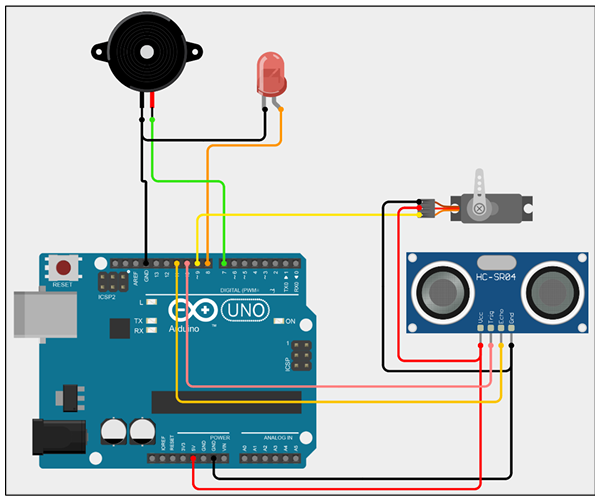

Project Details
Project Name: Radar Using Arduino UNO
Controller: Arduino UNO
Sensor: HC-SR04 Ultrasonic Sensor
Actuator: MG995 Servo Motor
Output Devices: LED and Buzzer
Programming Software: Arduino IDE and Processing IDE
Purpose: To scan an area and detect objects by measuring their distance using ultrasonic waves.
Required Components
 Arduino UNO
Arduino UNO
Main controller of the radar system.
 HC-SR04 Sensor
HC-SR04 Sensor
Measures the distance of nearby objects.
 MG995 Servo Motor
MG995 Servo Motor
Rotates the ultrasonic sensor for scanning.
 LED
LED
Provides a visual object-detection alert.
 Buzzer
Buzzer
Provides an audible object-detection alert.
 Jumper Wires
Jumper Wires
Used to make circuit connections.
Software and Library Requirements
Arduino IDE
The Arduino IDE is used to upload the radar program to the Arduino UNO.
Processing IDE
Processing IDE receives angle and distance values from Arduino through serial communication and displays the graphical radar screen.
Circuit Connections
| Component | Component Pin | Arduino UNO Pin | Purpose |
|---|---|---|---|
| All Components | GND | GND | Common ground |
| All Components | VCC | 5V | Power supply |
| HC-SR04 | Echo | D11 | Receives echo pulse |
| HC-SR04 | Trigger | D10 | Sends ultrasonic pulse |
| MG995 Servo | Signal | D9 | PWM control signal |
| LED | Anode positive pin | D8 | Visual warning |
| Buzzer | Positive pin | D7 | Sound warning |
Circuit Diagram
Make the connections according to the table before uploading the Arduino program.

Arduino Radar Circuit
Arduino UNO connected to an HC-SR04 sensor, MG995 servo motor, LED and buzzer.
Working Principle
Arduino UNO Code
#include <Servo.h>
const int trigPin = 10;
const int echoPin = 11;
const int servoPin = 9;
const int ledPin = 8;
const int buzzerPin = 7;
const int minimumAngle = 15;
const int maximumAngle = 165;
const int alertDistance = 20;
Servo radarServo;
long duration;
int distance;
int measureDistance() {
digitalWrite(trigPin, LOW);
delayMicroseconds(2);
digitalWrite(trigPin, HIGH);
delayMicroseconds(10);
digitalWrite(trigPin, LOW);
duration = pulseIn(echoPin, HIGH, 30000);
if (duration == 0) {
return 400;
}
return duration * 0.034 / 2;
}
void checkAlert(int measuredDistance) {
if (
measuredDistance > 0 &&
measuredDistance <= alertDistance
) {
digitalWrite(ledPin, HIGH);
tone(buzzerPin, 1000);
} else {
digitalWrite(ledPin, LOW);
noTone(buzzerPin);
}
}
void sendRadarData(int angle, int measuredDistance) {
Serial.print(angle);
Serial.print(",");
Serial.print(measuredDistance);
Serial.println(".");
}
void scanForward() {
for (
int angle = minimumAngle;
angle <= maximumAngle;
angle++
) {
radarServo.write(angle);
delay(25);
distance = measureDistance();
checkAlert(distance);
sendRadarData(angle, distance);
}
}
void scanBackward() {
for (
int angle = maximumAngle;
angle >= minimumAngle;
angle--
) {
radarServo.write(angle);
delay(25);
distance = measureDistance();
checkAlert(distance);
sendRadarData(angle, distance);
}
}
void setup() {
pinMode(trigPin, OUTPUT);
pinMode(echoPin, INPUT);
pinMode(ledPin, OUTPUT);
pinMode(buzzerPin, OUTPUT);
radarServo.attach(servoPin);
radarServo.write(minimumAngle);
Serial.begin(9600);
digitalWrite(ledPin, LOW);
noTone(buzzerPin);
delay(1000);
}
void loop() {
scanForward();
scanBackward();
}Processing IDE Code
import processing.serial.*;
Serial radarPort;
String serialData = "";
String angleText = "";
String distanceText = "";
int angle = 0;
int distance = 0;
void setup() {
size(1200, 700);
smooth();
println(Serial.list());
/*
Change the array number if required.
Example:
Serial.list()[0]
Serial.list()[1]
Serial.list()[2]
*/
radarPort = new Serial(
this,
Serial.list()[0],
9600
);
radarPort.bufferUntil('.');
}
void draw() {
background(0);
drawRadar();
drawScanningLine();
drawDetectedObject();
drawInformation();
}
void serialEvent(Serial radarPort) {
serialData = radarPort.readStringUntil('.');
if (serialData == null) {
return;
}
serialData = trim(serialData);
serialData = serialData.substring(
0,
serialData.length() - 1
);
int commaPosition = serialData.indexOf(',');
if (commaPosition < 0) {
return;
}
angleText = serialData.substring(
0,
commaPosition
);
distanceText = serialData.substring(
commaPosition + 1
);
angle = int(angleText);
distance = int(distanceText);
}
void drawRadar() {
pushMatrix();
translate(width / 2, height - 60);
stroke(0, 255, 0);
strokeWeight(2);
noFill();
arc(0, 0, 1100, 1100, PI, TWO_PI);
arc(0, 0, 850, 850, PI, TWO_PI);
arc(0, 0, 600, 600, PI, TWO_PI);
arc(0, 0, 350, 350, PI, TWO_PI);
line(-550, 0, 550, 0);
for (int radarAngle = 30;
radarAngle <= 150;
radarAngle += 30) {
float lineX =
550 * cos(radians(radarAngle));
float lineY =
-550 * sin(radians(radarAngle));
line(0, 0, lineX, lineY);
}
popMatrix();
}
void drawScanningLine() {
pushMatrix();
translate(width / 2, height - 60);
stroke(0, 255, 0);
strokeWeight(4);
float scanX =
550 * cos(radians(angle));
float scanY =
-550 * sin(radians(angle));
line(0, 0, scanX, scanY);
popMatrix();
}
void drawDetectedObject() {
if (distance <= 0 || distance > 100) {
return;
}
pushMatrix();
translate(width / 2, height - 60);
stroke(255, 0, 0);
strokeWeight(10);
float objectRadius =
map(distance, 0, 100, 0, 550);
float objectX =
objectRadius * cos(radians(angle));
float objectY =
-objectRadius * sin(radians(angle));
point(objectX, objectY);
popMatrix();
}
void drawInformation() {
fill(0, 255, 0);
textSize(22);
text(
"Angle: " + angle + "°",
40,
45
);
text(
"Distance: " + distance + " cm",
40,
80
);
if (distance > 0 && distance <= 20) {
fill(255, 0, 0);
text(
"Object Detected!",
40,
115
);
}
}Steps to Operate the Project
- Make all circuit connections according to the connection table.
- Connect the Arduino UNO to the computer using a USB cable.
- Open Arduino IDE and select the correct board and COM port.
- Upload the Arduino radar code.
- Close the Arduino Serial Monitor before opening Processing.
- Open Processing IDE and paste the radar display code.
- Select the correct serial port inside the Processing code.
- Run the Processing program.
- Place an object in front of the ultrasonic sensor.
- Observe the object position on the radar screen.